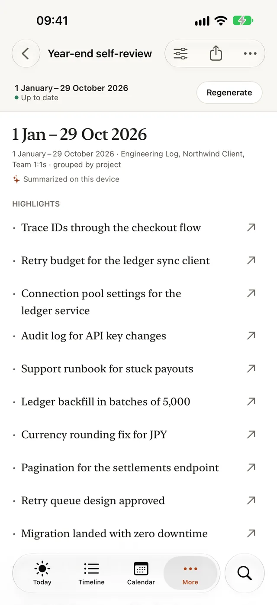
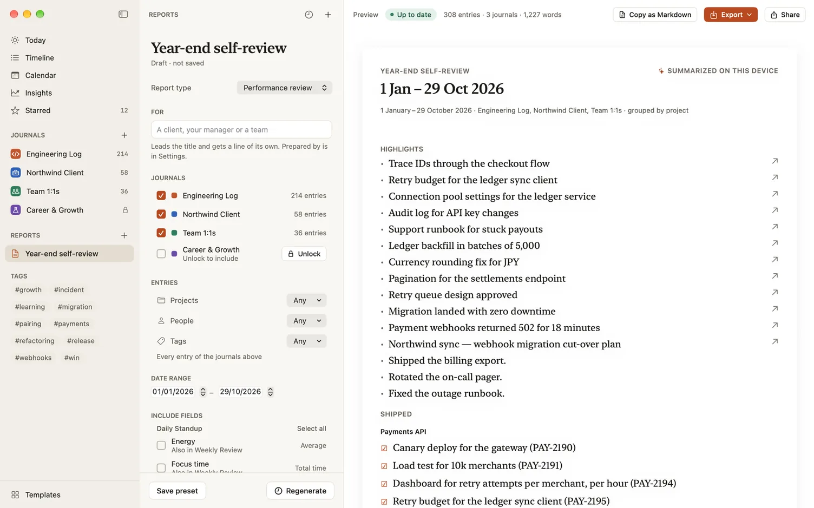
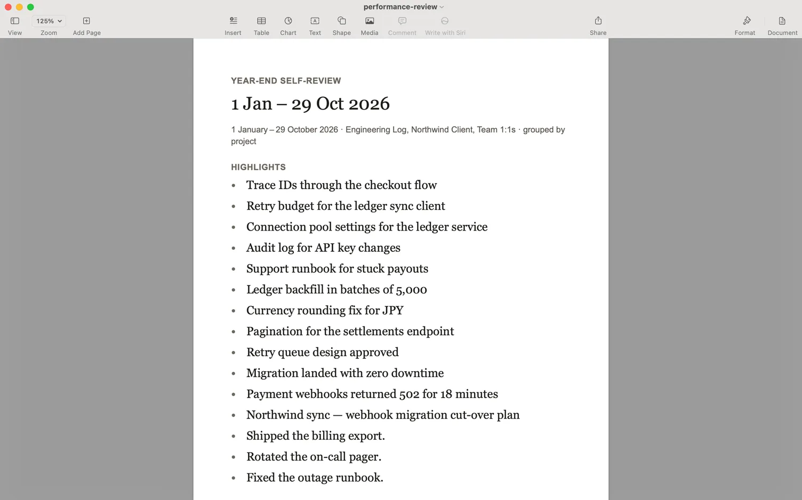

How to write your year-end self-review
PUBLISHED 2026-10-16
A self-review asks you to do something most of us rarely do: write down a year of your own work, in order of what mattered, for people who saw only part of it. It’s easy to put off and hard to start, mostly because the material is scattered across twelve months of memory, messages and calendars.
This article is the practical part: how to collect the evidence, how to shape it, and how to write each part so it reads well to your manager and to anyone they pass it on to. The last section shows how Dayfolio does the collecting for you, if you keep a work journal through the year.
Start with evidence, not a blank page
Don’t open the review form first. Open a scratch list and fill it before you write a single sentence. Good places to look:
- Your calendar, month by month. Launches, workshops, interviews, on-call weeks and the meetings you ran are all reminders of work.
- What you shipped or delivered: releases, documents, designs, deals, reports, cases closed.
- Messages that thanked you, praised your work or came back to ask for your help again.
- Your own notes, if you kept any: weekly updates, 1:1 notes, a brag document.
- The goals you set at the start of the year, and the ones that changed along the way.
Write each item as one line, with a date and a link where there is one. Don’t judge them yet. A long list you cut down is better than a short list you have to pad.
Choose the few that mattered
A review wants highlights, not an inventory. Go through your list and mark the three to five pieces of work that changed something: for customers, for your team, for the business, or for how people work. Ask of each one: what would be different if I hadn’t done it?
The rest still has a place. Smaller items often support a theme, such as “I made the on-call rotation calmer”, better than they stand alone.
A shape that works
If your company gives you a form, follow its questions. If it doesn’t, or you want a draft before you fill the form in, these four parts cover the usual questions:
- Biggest wins. What you’re proudest of this year, and what changed because of it.
- Growth. What you can do now that you couldn’t a year ago.
- Feedback received. What people told you about your work, the praise and the criticism.
- Next year. What you want to get better at, or take on.
Write each win so it stands on its own
A reader should understand a win without having been there. For each one, cover:
- The situation, in one sentence: what was wrong, missing or at stake.
- What you did. Use “I” for your part and “we” for the team’s. A review is the place to be clear about your own contribution, without taking credit for anyone else’s.
- What changed: the outcome, not the activity. “Shipped the new checkout” is activity; what it changed for customers or for the team is the outcome.
- The evidence: a link to the release, the document, the dashboard or the message, and numbers where your own records have them.
Here’s the shape as an example, not a real one: “Failed payments used to reach support as tickets. I designed a retry queue, built it with two teammates and rolled it out to every merchant in June. Payments now retry on their own, and support stopped escalating them. The release notes and the design doc are linked.”
Be honest about the hard parts
A review where nothing went wrong reads as unexamined. Pick one or two things that didn’t go as planned, and say what you learned and what you do differently now. That’s often the most convincing evidence of growth you have.
Make next year specific
“Grow as a leader” is a wish. “Run the incident reviews for the payments team, and mentor a new engineer through their first on-call week” is a plan your manager can support. Tie it to what you learned this year.
Edit before you send
- Put the outcome first in each paragraph. Readers skim.
- Cut the adjectives a link or a result can replace.
- Check the length your company expects, and the deadline.
- Read it as your manager will: could they repeat each win to someone else in one sentence?
How Dayfolio helps
Dayfolio is a work journal for iPhone, iPad and Mac. A self-review is much easier when the year is already written down, and that’s what it’s for.
Through the year, capture wins as they happen. The library’s Brag document template has a Win field that asks “What did you do, and what changed because of it?”, an Impact of High, Medium or Low, an Evidence link, and Kudos from for the person who noticed. Star an entry when it’s worth remembering: at review time, the titles of your starred entries come first.
At review time, start the report. In Reports, choose + › Year-end self-review. Reports is in the sidebar on the Mac and iPad, and in More on iPhone. It sets up a Performance review of this year so far, from 1 January to today (in January, the whole year just ended), with your wins first:
- Fields whose labels say what you achieved, such as Win, Wins, Shipped or Done, come first, then the links that back them up, then the rest.
- It’s grouped by project, and the titles of your starred entries come first in Highlights, each linking back to its entry.
- Where Apple Intelligence is available, a short summary is written on your device and added to Highlights. You can edit every highlight.
- Notes about people, such as your 1:1 notes, stay out unless you tick them.

You choose which journals and fields it reads, and you can narrow it to the entries for a project, with a person or tagged with a tag.

Write the review itself in an entry. Add the Year-end self-review template to a journal from the library: open Templates, find it in the General pack and add it to your journal. Its fields are the four parts above, Biggest wins, Growth, Feedback received and Next year, each with a question to answer, plus an Evidence link and Tags. Write it from what the report gathered.
Send it. Export the report as Word, PDF or Markdown, or copy it as Markdown and paste it into your company’s review tool. Making a report and reading it on screen is free; keeping reports and sending them come with the purchase.

Start before review season
The best time to start a self-review is the week after the last one. One short entry when something goes well, and a glance at your starred entries every month or so, turns review season into editing rather than remembering.
- See the Year-end self-review template and the Brag document template, with every field and a filled-in example.
- Read about Reports in the Dayfolio guide: every kind of report, filters and exports.
- Read what goes in a brag document, and how to keep one, so next year’s review starts itself.
- Get Dayfolio on the App Store for iPhone, iPad and Mac.